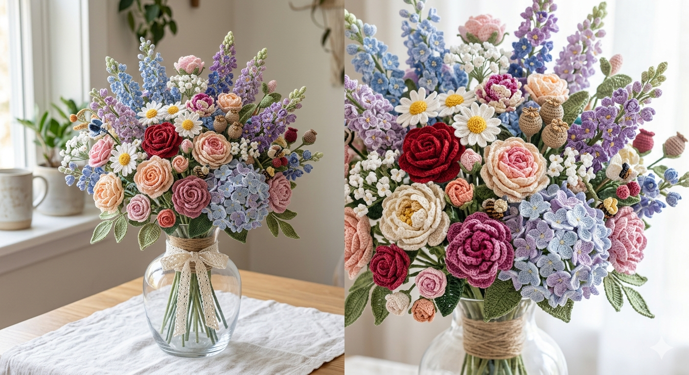
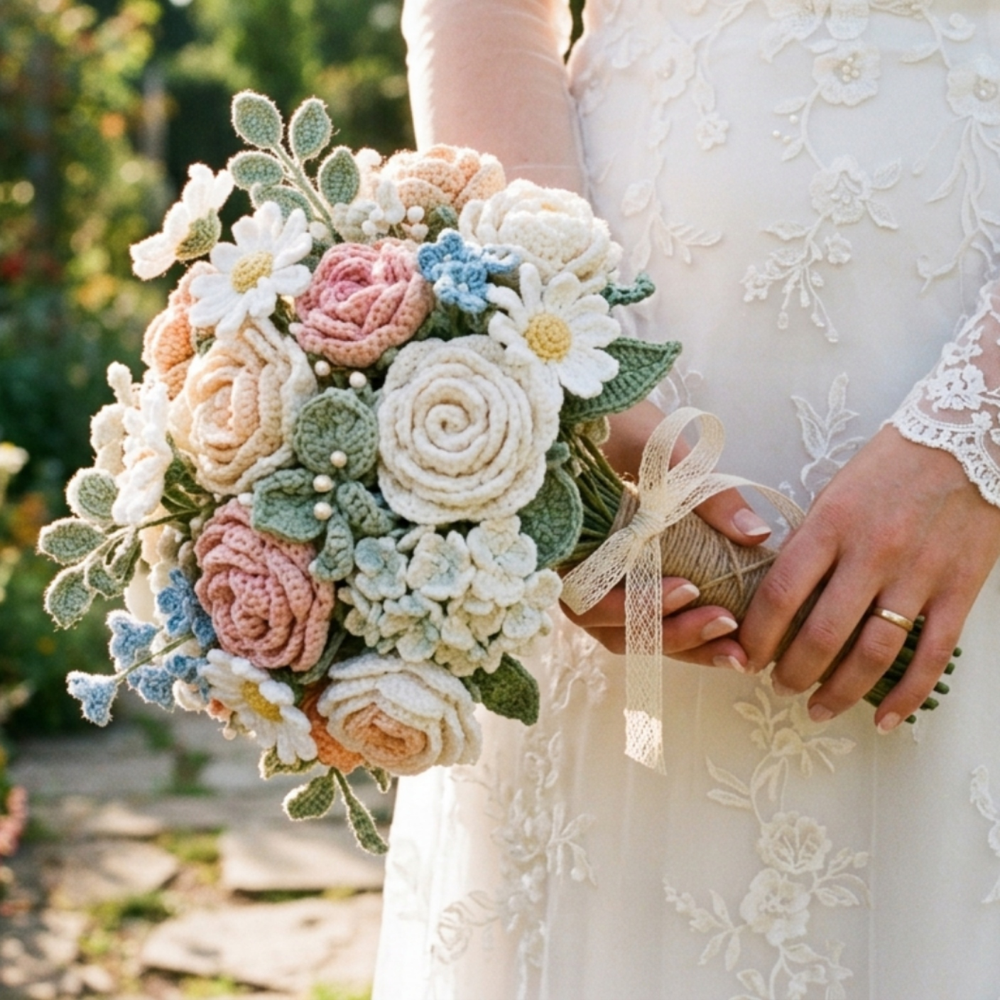
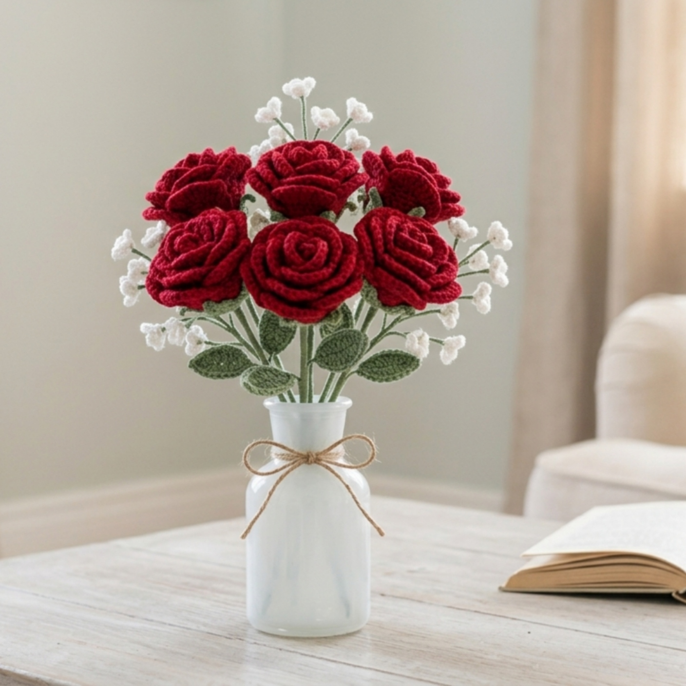
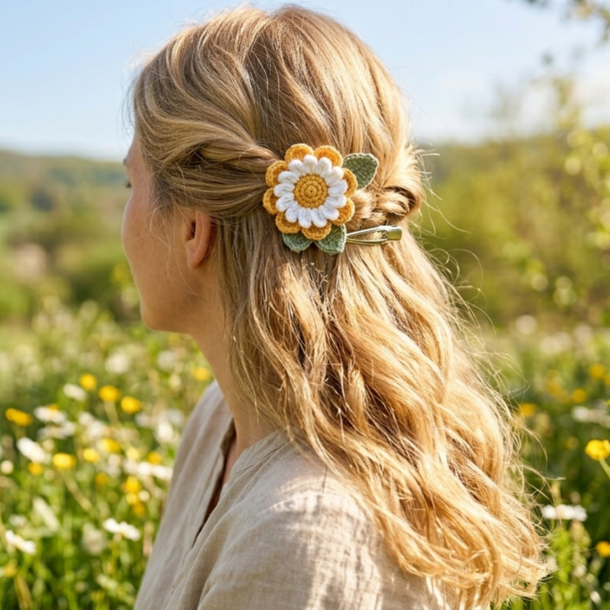
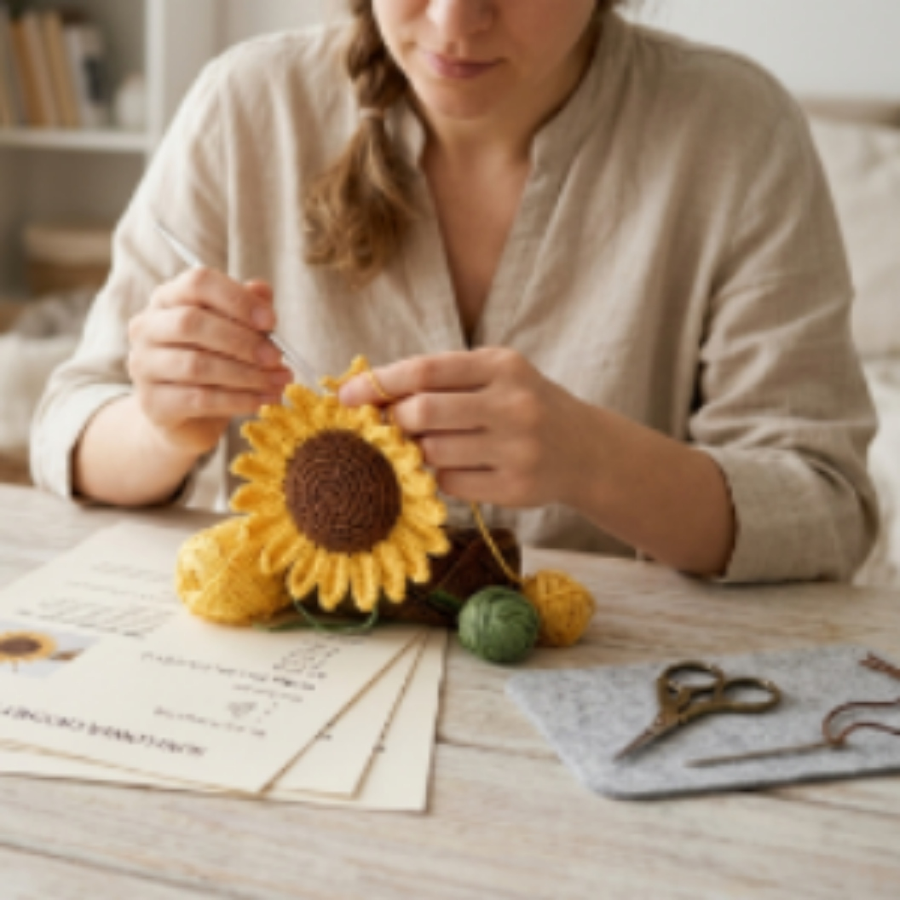

Flowers give color to your home. What would happen if you could have them in full shape all year round? Get yours or make them yourself!


We create or re-create wedding bouquets so you can keep yours forever

Get your favorite flowers for an all-year-round colorful house

Or fullfil your life of different flower accessories that will bring you color and style

You want to do it yourself to show off your skills to your family and friends? We have the patterns and tutorials for you!
Where flowers bloom so does hope
— Lady Bird Johnson
Sign up to see our latest creations, order our products or contact us for a custom bouquet.